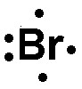
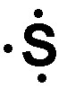
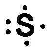

Press Ctrl-Z to toggle the answers.
Exam 2 (Ch 3-5)
Mr. Alder
Oct 4, 2022
name: ______________________________________
1) Which of the following is a nonmetal?
A) sulfur*
B) uranium
C) titanium
D) sodium
2) Which of the following has the smallest atomic radius; Na, Cl, Rb, or I?
A) Na
B) Cl*
C) Rb
D) I
3) which of the following is a actinide?
A) germanium
B) calcium
C) nitrogen
D) uranium*
4) Which of the following has the largest atomic radius; P, S, Cl, or Ar?
A) P*
B) S
C) Cl
D) Ar
5) Which rule states that at ground state electrons will fill the lowest energy orbitals first?
A) Aufbau principle*
B) Hund's rule
C) Heisenberg uncertainty principle
D) Pauli exclusion principle
6) Which of the following is a property of metals?
A) shiny*
B) dull
C) brittle
D) poor conductor of electricity
7) Give the ground state electron configuration for Se
A) 1s2 2s2 2p6 3s2 3p6 4s2 3d10 4p4*
B) 1s2 2s2 2p6 3s2 3p6 4s2 3d10 4p6 5s2 4d10 5p4
C) 1s2 2s2 2p6 3s2 3p4
D) 1s2 2s2 2p6 3s2 3p6 4s2 3d10 3d10 4p4
8) Predict the charge that aluminum will take as an ion.
A) +3*
B) -1
C) +2
D) +1
9) Which of the following has the most nonmetallic character; Mg, Ca, Sr, or Ba?
A) Mg*
B) Ca
C) Sr
D) Ba
10) An orbital that penetrates into the region occupied by core electrons will be at a lower energy level.
A) True*
B) False
11) How many valence electrons does Ge have?
A) 32
B) 14
C) 4*
D) 18
12) Give the name for HI
A) Hydroiodic acid
B) Iodous acid
C) Hydroiodic acid*
D) Iodic acid
13) What is the empirical formula for a sulfur oxide (compound composed of sulfur and oxygen) that is 50.0% sulfur by mass?
A) S3O
B) SO3
C) SO2 *
D) S2O
14) Which of the following is the correct Lewis structure for Br ?
A)
 *
*B) 
C)

D)

15) Which of the following would have the highest lattice energy?
A) Na2O
B) Li2O
C) Li2O
D) MgO*
16) A single covalent bond contains how many electrons?
A) 3
B) 4
C) 1
D) 2*
17) Which of the following is the correct Lewis structure for S+ ?
A)

B) 
C)

D) *
18) Give the name for SnS
A) Tin sulfide
B) Tin (II) sulfide*
C) Tin (IV) sulfide
D) Tin monosulfide
19) An unknown compound contains only carbon and hydrogen. When it undergoes combustion analysis, it produces 53.1 g of CO2 and 29.0 of H2O. Given that it has a molar mass of 44.1 g/mol, what is the molecular formula?
A) C3H10
B) C2H4
C) C3H8*
D) C3H6
20) Give the name for P4O10.
A) Phosphorus oxide
B) Phosphorus (II) oxide
C) Phosphorus decoxide
D) Tetraphosphorus decoxide*
21) What is the empirical formula for CO2?
A) CO
B) C2O4
C) CO2*
D) C2O
22) Give the name for HClO3.
A) Hydrochloric acid
B) Chlorous acid
C) Hydrogen chlorate
D) Chloric acid*